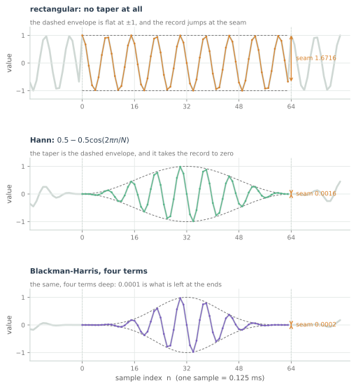
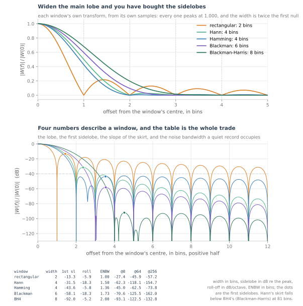
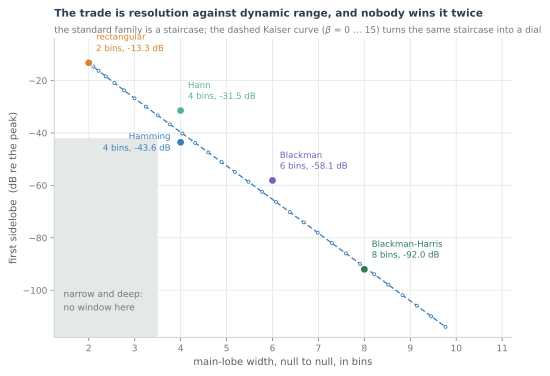
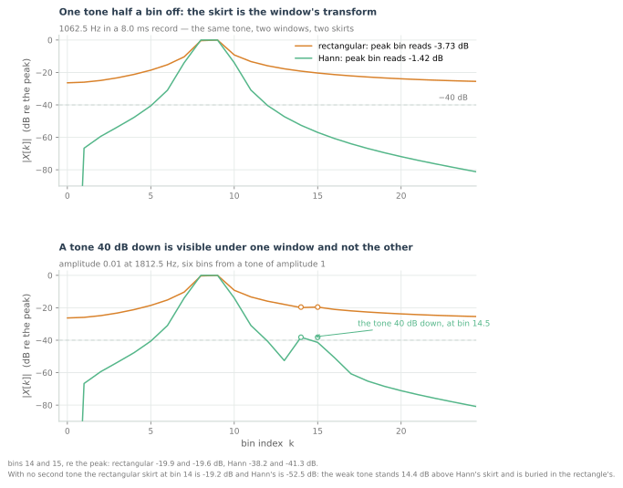
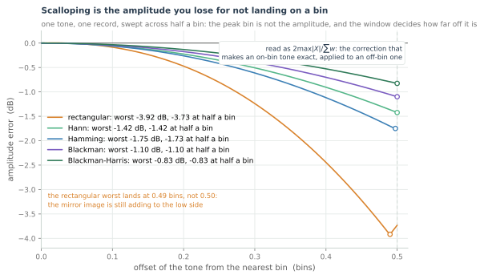
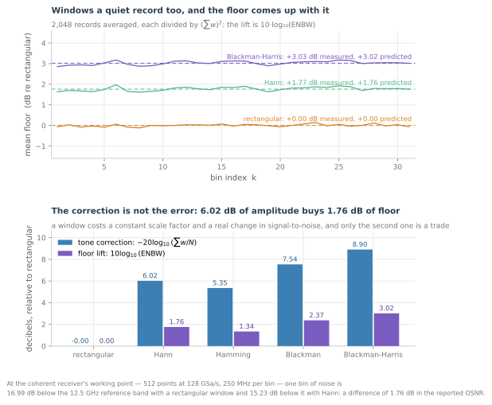
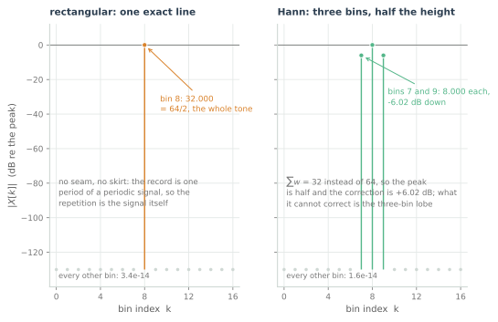

Windows, Leakage and Resolution
Why a pure sine leaves a smear, why rectangular is sometimes correct, and how to choose a window from its sidelobe roll-off instead of superstition.
A record has edges, and the transform knows it. Chapter 6 showed the mechanism: the probes treat the record as one period, the record is butt-jointed to its own start, and a tone that does not complete a whole number of cycles leaves a corner at every join. Chapter 7 made the transform cheap enough that nobody thinks twice before pointing it at a record, which is exactly why the corner is worth thinking about now.
The corner has a name, and it does not belong to the tone. What chapter 6's skirt was made of was the transform of the rectangle that cut the record out of the world — the tone's line convolved with the aperture's own spectrum. Every bin of that skirt was computed from the rectangle. A pure sine through a rectangular window is a measurement of the window.
So the aperture is a choice, and this chapter is about making it deliberately: what a taper buys and costs, why the cost is counted in bins and decibels rather than in taste, how to read a skirt instead of memorising a name, and the cases where the right window is no window at all.
The skirt is the window, not the sine

Every record arrives already multiplied by a window. The ADC hands over $N$ numbers and the transform treats everything outside them as zero — the same as multiplying the signal by a rectangle of height one and width $N$ samples. Nothing in chapter 6's sum mentions a window, and yet
is what was computed, with $w[n] = 1$ for every $n$. Write the window in explicitly and the rest is the convolution theorem: the transform of a product is the convolution of the transforms. A tone's spectrum is two impulses, at $+f_0$ and at $-f_0$, and multiplying by a window replaces each impulse with a copy of the window's own transform $W(f)$, centred where the impulse was. The DFT then samples that copy at the bins. The skirt is $W$, stamped at the tone's frequency.
For the rectangular window $W$ has a name — the Dirichlet kernel — and a shape worth remembering because every other window is compared against it. It is tallest at the tone, crosses zero one bin either side, and from there its sidelobes fall as $1/f$: the first is at −13.3 dB, 1.43 bins out, and the envelope is still at −27.4 dB eight bins out and −45.9 dB at sixty-four.

Four numbers describe a window, and all four belong to the aperture rather than to the signal:
- Main-lobe width, null to null, in bins: 2 for the rectangle. The resolution you paid for.
- First sidelobe, in dB below the peak: −13.3 dB. The closest a strong tone comes to hiding a weak one.
- Roll-off, in dB per octave of offset: −5.9. What happens far from the tone.
- Equivalent noise bandwidth, in bins: 1.00. What a quiet record fills.
The rectangular window's edge is a jump, and a jump has energy at every frequency — chapter 5 watched a square wave do exactly this. A window that tapers the record to zero at both ends removes the jump and the slow $1/f$ tail with it: Hann's value and its first derivative vanish at the join, and its skirt falls at −18.3 dB per octave instead of −5.9. The exponent is set by how many derivatives match at the seam, which is why a deep window is deeper in the first sidelobe without being steeper in the skirt.
A window is a filter applied to the record rather than to the signal; chapter 9's unit circle is where that becomes a picture. What matters here is that chapter 6's two fixes — a window, or a record length that lands the tone on a bin — are not equivalent. Landing on a bin removes the seam; a window tapers it away and charges for it in resolution.
What a taper buys and costs
Every number in the table is measured the same way: zero-pad the window's $N$ samples to 512 times its length and take the magnitude of the transform. Nothing is quoted from a closed form, and the numbers match the standard table because the standard table was made the same way.
| window | width (bins) | first sidelobe | roll-off (dB/oct) | ENBW (bins) |
|---|---|---|---|---|
| rectangular | 2 | −13.3 dB | −5.9 | 1.00 |
| Hann | 4 | −31.5 dB | −18.3 | 1.50 |
| Hamming | 4 | −43.6 dB | −5.8 | 1.36 |
| Blackman | 6 | −58.1 dB | −18.3 | 1.73 |
| Blackman-Harris, 4 terms | 8 | −92.0 dB | −5.2 | 2.00 |
Read the first two columns together, because that is where the purchase happens. Hann buys 18 dB of first sidelobe for two bins of width. Hamming buys another 12 dB for nothing in width — and gives most of it back in the third column, because its coefficients sum to 0.08 rather than zero. Blackman buys 15 dB more for two more bins; Blackman-Harris, four terms, buys 34 dB more for two more. The price list is monotone, and the currency is always width for depth.
Why the cosine terms work is the only algebra in the chapter. Each term $\cos(2\pi k n/N)$ contributes a pair of Dirichlet kernels shifted to $\pm k$ bins, so an $N$-sample cosine-sum window has a transform that is a sum of shifted kernels. The leading $1/f$ term of that sum is proportional to the window's value at the join — which for this form is simply the sum of its coefficients. Set that sum to zero, as Hann and Blackman do, and the leading tail cancels, leaving $1/f^3$. That is Hann (−18.3 dB/octave) and Blackman (−18.3). Leave it at Hamming's 0.08 and the tail survives at −5.8. The four-term Blackman-Harris is designed to cancel it too, but its published coefficients, rounded to five decimals, sum to 0.00006 rather than zero, and that residue is the whole of its far skirt.
A taper costs more than width. It also multiplies the record by something that is not one on average: Hann's mean is 0.5, so an on-bin tone's peak bin comes out at half its rectangular height and the display correction is +6.02 dB. That correction divides out exactly, which makes it the cheapest of the costs. The width does not divide out, and neither does the noise bandwidth.
The trade is resolution against dynamic range

Put the first two columns of the table on axes and the argument makes itself. The five points form a staircase from (2 bins, −13.3 dB) to (8 bins, −92.0 dB), and every step down is paid for by a step right. There is no point near the origin — no window that is both narrow and deep — because width and sidelobe level are two views of one time-frequency product, and that product has a floor. The grey rectangle is drawn where a narrow, deep window would have to sit, and nothing lands in it.
That is not the same as saying the five points are the best possible. The dashed curve is a Kaiser window with $\beta$ swept from 0 to 15, turning the staircase into a dial: width from 2.00 to 9.77 bins, first sidelobe from −13.3 to −114.0 dB, continuously. At Hann's sidelobe level the Kaiser curve is at 3.24 bins against Hann's 4, and 1.25 bins of ENBW against 1.50 — the cosine windows are not on the frontier.
The result is real, and smaller than it sounds: not a reason to abandon Hann, only to stop believing the five names are the whole space. When a specification says "80 dB down and no wider than four bins", the answer is a Kaiser at some $\beta$, not the nearest of five.
And the ruler matters. Hann is 4 bins wide null to null and 1.50 by equivalent noise bandwidth; the Kaiser at Hann's sidelobe level is 3.24 and 1.25. Two windows 30% apart on one ruler can be 15% apart on the other. Pick the ruler that matches the question — two tones to separate is a main-lobe question, a tone in noise is a noise-bandwidth question — and quote it.
Reading a window's roll-off instead of memorising names

The third column of the table decides most real measurements, and it is the one people skip. Two slopes exist here, about −6 and −18 dB per octave, and the difference compounds with distance until the first sidelobe is irrelevant.
The kernels figure prints the envelope at 8, 64 and 256 bins of offset, and those numbers make the case better than any name can. At eight bins out, Hamming is at −45.0 dB and Hann at −62.3: Hann is 17 dB better, having started 12 dB worse. At sixty-four bins out, Hamming is at −62.5 and Hann at −118.1 — a difference of 55 dB, from windows whose first sidelobes are 12 dB apart the other way. Hamming's deep first sidelobe is real and almost irrelevant: it promises the first three bins, and the skirt promises everything after them.
The same reading catches the deepest window. Blackman-Harris has a first sidelobe at −92.0 dB and is at −93.1 eight bins out, which looks like the whole answer. But its skirt past about thirty bins falls at −5.2 dB per octave, because those four coefficients sum to 0.00006 rather than zero — a window whose coefficients do not sum to zero keeps a $1/f$ term, and $1/f$ is 6 dB per octave however deep the first sidelobe is. Hann, at −18.3, catches it at 81 bins: at 256 bins Hann is at −154.7 and Blackman-Harris at −132.8. The first sidelobe is not the skirt, and a table that stops at the first sidelobe stops where the trouble starts.
Now the measurement this section exists for. Take the tone of the first figure — 8.5 bins, half a bin off — and put a second tone six bins away at amplitude 0.01, which is 40 dB down. Under a rectangular window the strong tone's skirt at bin 14, where the weak tone lives, is already at −19.2 dB relative to the peak. The weak tone lifts that bin to −19.9 dB: a 0.69 dB ripple on a slope falling 6 dB per octave. You cannot see it, and no averaging will help, because it is not noise — it is the window.
Under Hann the strong tone's skirt at bin 14 is at −52.6 dB and the weak tone reads −38.2 dB: 14.4 dB clear, alone, with its neighbour at −41.3. The weak tone was always there. The rectangular window was drawing over it.
So the procedure is measured and needs no names: name the dynamic range (how far below the strong tone, here 40 dB), name the offset (how many bins away, here six), and take the narrowest window whose skirt is below that level there. Six bins and 40 dB is Hann, or anything deeper; two bins and 40 dB is no window at all, which is why the tone-on-a-bin trick outranks every taper.
Scalloping, noise bandwidth, and what the floor does

Two more numbers come out of the same lobe, and both bite.
The first is scalloping. A tone between bins puts less energy in the peak bin than a tone on a bin, so the amplitude read off that bin under-reads, by an amount that depends on where in the bin the tone sits. Swept across half a bin, the worst case is 3.92 dB for a rectangular window, 1.42 dB for Hann, 1.75 for Hamming, 1.10 for Blackman and 0.83 for Blackman-Harris. The rectangular worst lands at 0.49 bins rather than half-way, because the negative-frequency image is still tilting the pair — chapter 6 measured that tilt when the neighbours came out 4.5% apart — and at exactly half a bin the error is 3.73 dB.
That is the trade read from the other end: the widest lobe has the flattest top, so the window that costs most resolution buys the smallest amplitude error. If amplitudes matter and you cannot control the offset, that is worth more than the sidelobes.
The second is the noise bandwidth. A window multiplies the noise too, and after the correction that makes a tone read correctly, a white-noise floor rises by
which is 0 dB for the rectangle, 1.76 dB for Hann and 3.02 dB for Blackman-Harris. The quantity in brackets is the equivalent noise bandwidth in bins: 1.00, 1.50 and 2.00. It is the width of the rectangular filter that would pass the same noise power, and the honest answer to "how much resolution did the window cost".

The figure splits the two corrections, because conflating them is the usual mistake. The tone correction is $-20\log_{10}(\sum w/N)$: 6.02 dB for Hann, 8.90 for Blackman-Harris, a scale factor that cancels out of any ratio. The floor lift is $10\log_{10}(\mathrm{ENBW})$: 1.76 and 3.02 dB, and it does not cancel, because it is a change in signal-to-noise. Measured on 2,048 noise records, the floors land at +1.77 and +3.03 against predictions of +1.76 and +3.02.
So the sentence to carry into a measurement: windowing costs 10·log₁₀(ENBW) of signal-to-noise, and it costs it in the noise, however you scale the display. Hann is 1.76 dB, neither free nor fatal; Blackman-Harris is 3.02 dB, a budget item. If a strong tone next to a weak one is the problem, pay it. If the weak tone is the only signal, do not.
When rectangular is correct

The rectangular window is the default in every library, and calling it "no window" makes it sound like an absence of a decision. It is a decision, and sometimes it is the right one.
When the record is exactly one period of a periodic signal. The figure's record is a 1 kHz tone in 8 ms, eight whole cycles: the transform returns 32.000 in bin 8 and 3.4e-14 everywhere else. There is no seam, so there is nothing for a taper to fix. Apply Hann and the same record comes back as three bins — 16.000 at the tone, 8.000 either side, +6.02 dB to restore the amplitude — and you have paid resolution and noise bandwidth for a discontinuity that was not there. A window cannot improve a record that has no seam; it can only smear one. This is chapter 6's "choose a record length that lands the tone on a bin" seen from the window's side, and it is why the first thing to try with a single tone is a record length, not a window.
When the record is the whole of the signal. An impulse response captured until it has decayed to zero has no seam either: the last sample is as close to zero as the first. Tapering it multiplies away the tail you stayed up late to capture and widens the very feature — the sharp arrival — you were measuring. Convolving with the window's transform is wrong here because the signal has already done the job.
When the physics or the standard already tapered it. A burst that starts and ends at zero, a pulse with a raised-cosine envelope, a symbol whose standard specifies a ramp: the record arrives with its edges at zero, and a second taper squares an already-tapered envelope — width twice for a seam handled once.
And a fourth, a special case of the first: two similar tones, close together, dynamic range not the issue. The rectangle has the narrowest lobe available, two bins; if the tones are within a few dB of each other the skirt is not what limits you, the lobe is. This is where Hann turns two resolvable tones into one peak.
The honest framing for all of them: rectangular is a claim that the record has no seam. When the claim is true, nothing beats it. When it is false, nothing is worse, because the claim is made silently.
What to carry forward
- The skirt is the window, not the sine. $X$ is the tone convolved with the aperture's transform and sampled at the bins. Rectangular: 2 bins wide, first sidelobe −13.3 dB, roll-off −5.9 dB/octave, ENBW 1.00.
- The seam is measurable. The half-bin-off record jumps 1.6716 at the join with no taper, 0.0016 with Hann, 0.0002 with Blackman-Harris.
- Every window buys sidelobes with main-lobe width. 2/−13.3, 4/−31.5, 4/−43.6, 6/−58.1, 8/−92.0 is the staircase; Kaiser $\beta$ = 0 … 15 is the same trade made continuous.
- Roll-off decides at distance. Hamming is 17 dB better than Hann at eight bins and 55 dB worse at sixty-four; Hann overtakes Blackman-Harris at 81 bins.
- A weak tone is visible when the skirt is below it at its offset. At six bins and 40 dB down the rectangle is at −19.2 dB and the tone reads −19.9, invisible; Hann is at −52.6 and the tone reads −38.2, 14.4 dB clear.
- Off a bin the peak under-reads by up to 3.92 dB (rect), 1.42 (Hann), 0.83 (Blackman-Harris) — and the widest lobe has the smallest error.
- Windowing costs 10·log₁₀(ENBW) of signal-to-noise: 1.76 dB for Hann, 3.02 for Blackman-Harris, measured at +1.77 and +3.03. The 6.02 dB tone correction cancels; this does not.
- Rectangular is correct when the record has no seam — exactly one period (32.000 and 3.4e-14), decayed to zero, or already tapered by the standard.